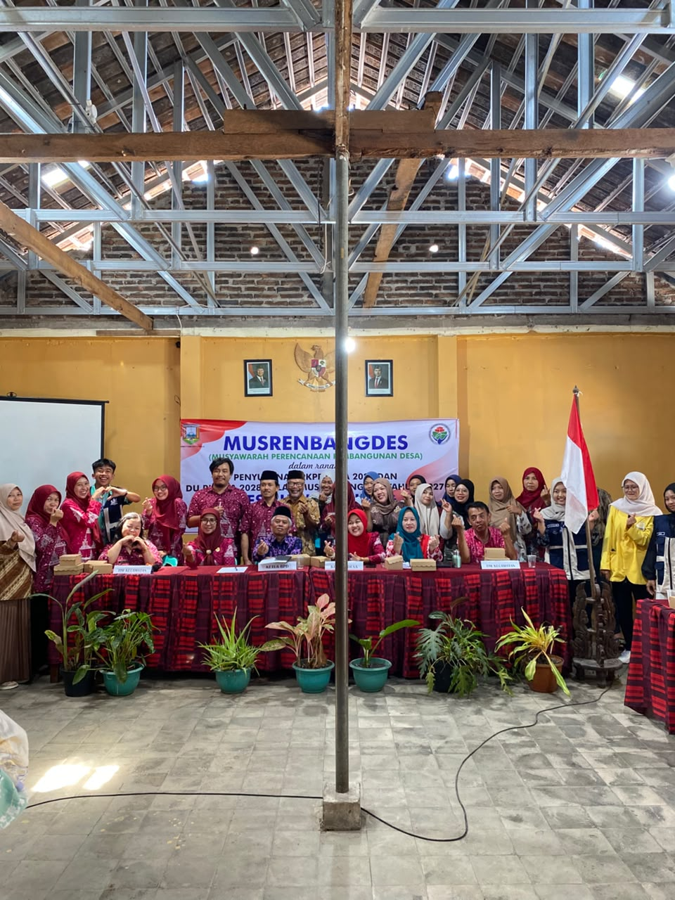
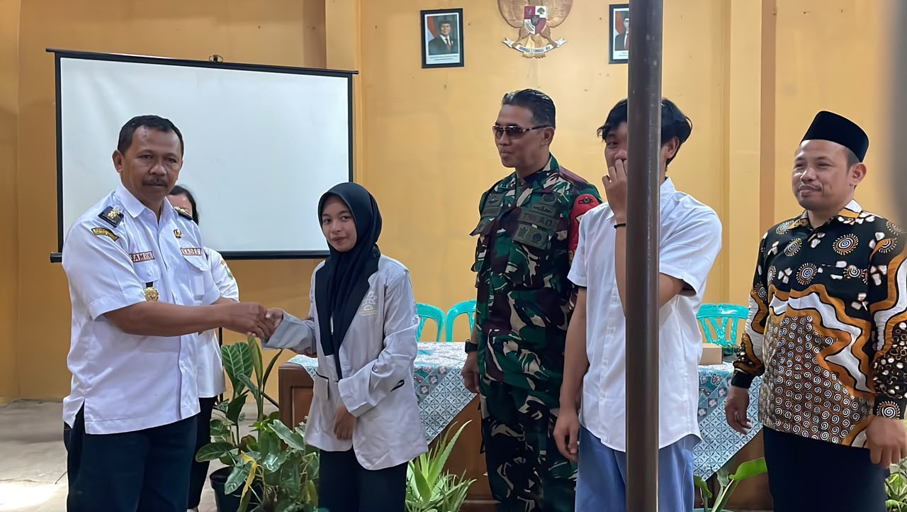
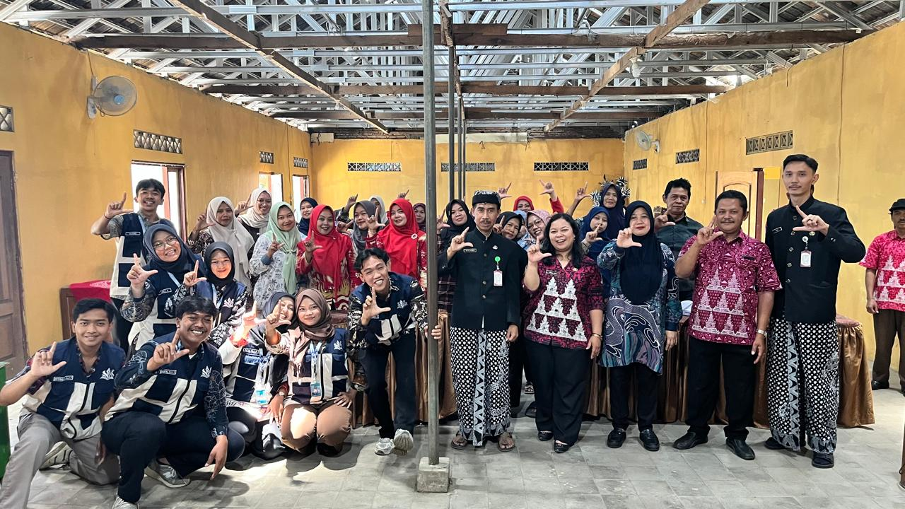
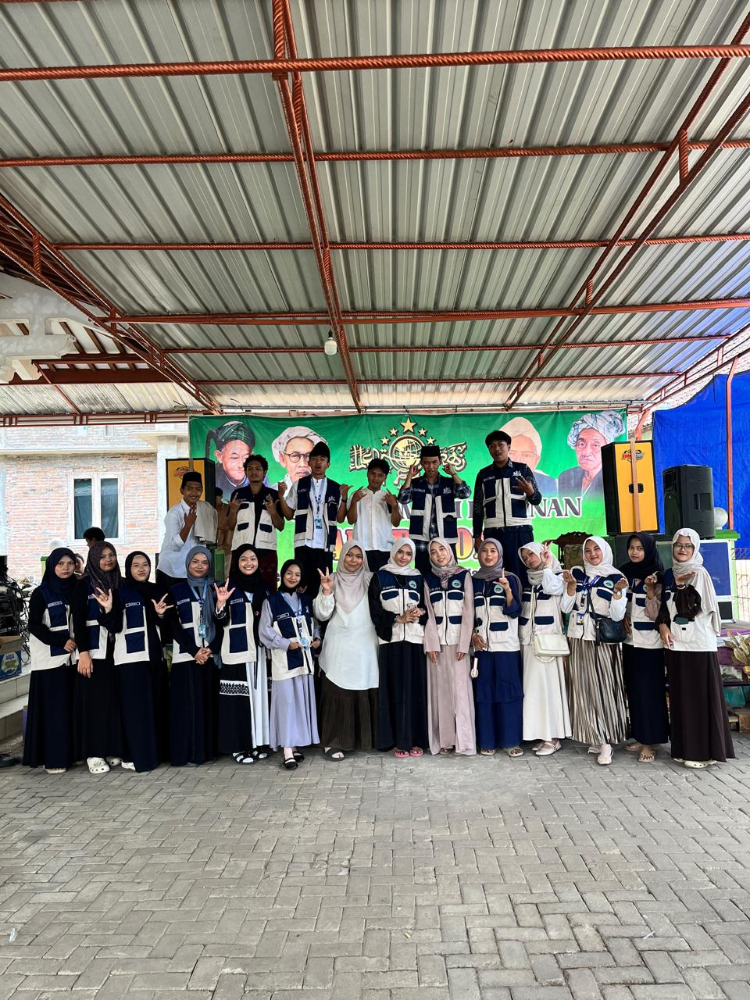
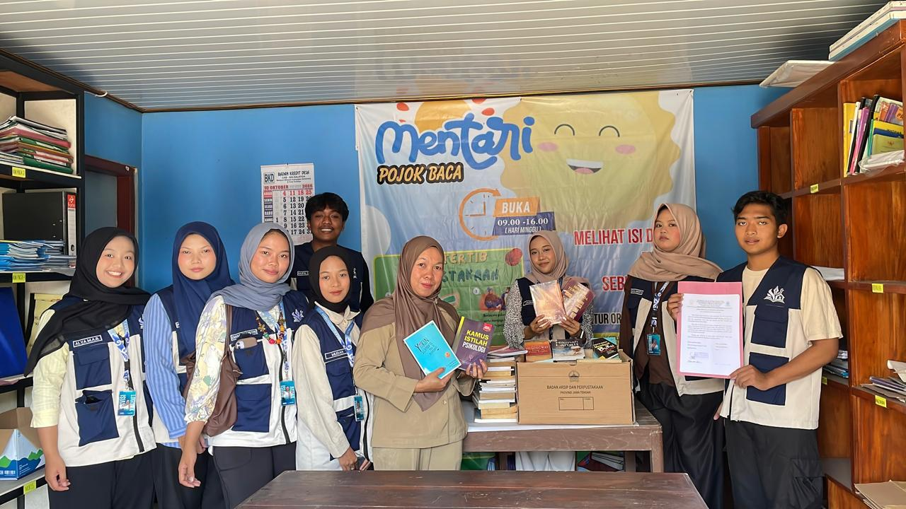

Pemdes Ujung-Ujung Gelar Musrenbangdes untuk Penyusunan RKPDes Tahun 2027
Kegiatan mahasiswa KKN Nalarasa dalam melaksanakan berbagai aktivitas bersama masyarakat Desa Sukamulya.
Baca selengkapnya →Temukan berbagai informasi, kegiatan, program kerja, dan cerita terbaru dari KKN Nalarasa Desa Ujung-ujung.

Kegiatan mahasiswa KKN Nalarasa dalam melaksanakan berbagai aktivitas bersama masyarakat Desa Sukamulya.
Baca selengkapnya →
Berbagai program kerja mulai dijalankan sebagai bagian dari kontribusi mahasiswa kepada masyarakat desa.
Baca selengkapnya →
Ujung-Ujung, 15 Oktober 2026-Mahasiswa KKN Nalarasa UIN Salatiga menyelenggarakan kegiatan Sosialisasi Pemeliharaan Arsip Keluarga pada Kamis (15/10/2026), mulai pukul 09.40 WIB.
Baca selengkapnya →
Ujung-Ujung, 18 Oktober 2026-Pengajian Rutin Ahad Pon Nahdlatul Ulama (NU) Desa Ujung-Ujung, Kecamatan Pabelan, berlangsung pada Minggu (18/10/2026) di Masjid Jami’ S hulton, Dusun Karang, RT 01/RW 02, Desa Ujung-Ujung. Kegiatan yang dimulai pukul 09.00 WIB tersebut dihadiri sekitar 350 jamaah.
Baca selengkapnya →
Kerja sama ini merupakan salah satu upaya untuk mendukung pengembangan perpustakaan dan meningkatkan akses masyarakat terhadap bahan bacaan.
Baca selengkapnya →
Berbagai pengalaman mahasiswa selama mengikuti rangkaian kegiatan KKN menjadi bagian dari perjalanan Nalarasa.
Baca selengkapnya →